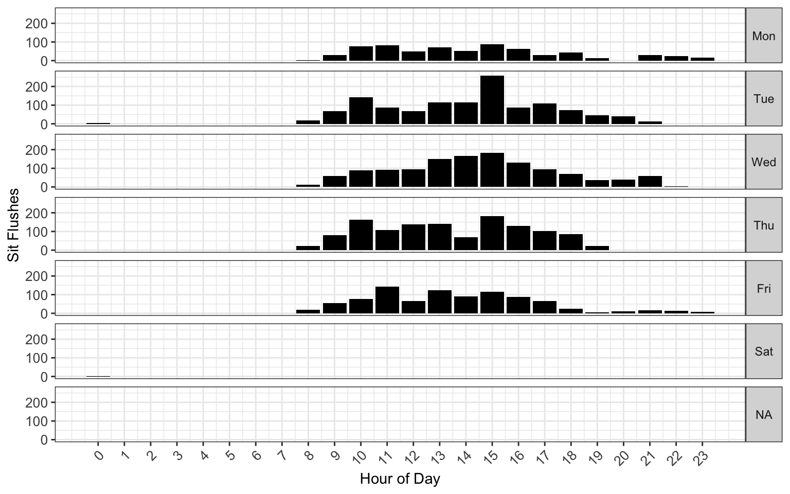
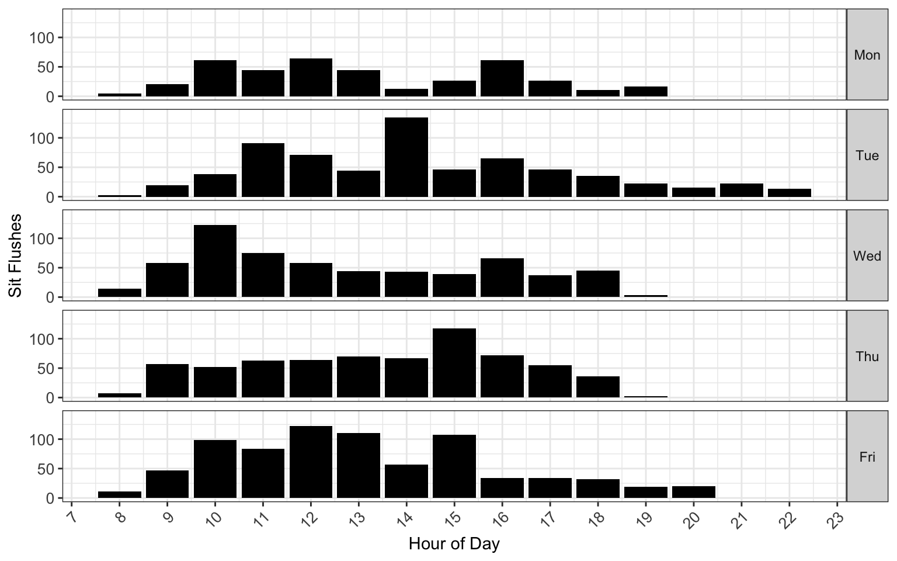

Please see left-sidebar for definitions


#| '!! shinylive warning !!': |
#| shinylive does not work in self-contained HTML documents.
#| Please set `embed-resources: false` in your metadata.
#| standalone: true
#| viewerHeight: 450
webr::install("dplyr")
webr::install("ggplot2")
webr::install("lubridate")
library(shiny)
library(dplyr)
library(ggplot2)
library(lubridate)
ui <- fluidPage(
fluidRow(
column(6,
fluidRow(
column(12, align = "center",
dateInput("date", label = "Select Date:", value = Sys.Date())
)
),
fluidRow(
column(12, align = "center",
actionButton("btn_Aurora-1", label = "Aurora-1"),
actionButton("btn_Aurora-2", label = "Aurora-2")
)
),
fluidRow(
column(12, align = "center",
actionButton("render", label = "Render Output")
)
),
# Output Section
fluidRow(
column(12,
plotOutput("qc_plot")
)
)
)
)
)
server <- function(input, output, session) {
data_path <-
paste(
"https://raw.githubusercontent.com",
"UMGCCFCSS", "InstrumentQC",
"main", "data", "AppData.csv",
sep = "/"
)
Data <- read.csv(data_path, check.names = FALSE)
Data$DateTime <- ymd_hms(Data$DateTime)
Data$PreviousSunday <- as.Date(Data$PreviousSunday)
Data <- Data %>% mutate(Date = as.Date(DateTime))
function_path <-
paste(
"https://raw.githubusercontent.com",
"DavidRach", "Luciernaga",
"master", "R", "DashboardHelpers.R",
sep = "/"
)
source(function_path)
selected_instrument <- reactiveVal()
observeEvent(input$btn_5L, { selected_instrument("Aurora-1") })
observeEvent(input$btn_5L, { selected_instrument("Aurora-2") })
table_data <- eventReactive(input$render, {
req(input$date, selected_instrument())
InstrumentSubset <- Data %>% filter(Instrument == selected_instrument())
TheSunday <- InstrumentSubset %>% filter(Date == input$date) %>%
pull(PreviousSunday) %>% unique()
DateSubset <- InstrumentSubset %>% filter(PreviousSunday == TheSunday)
if (nrow(DateSubset) > 0) {
UsagePlot(data=DateSubset, TheInstrument=selected_instrument())
} else {
NULL
}
})
output$qc_plot <- renderPlot({
req(table_data())
table_data()
})
}
app <- shinyApp(ui = ui, server = server)